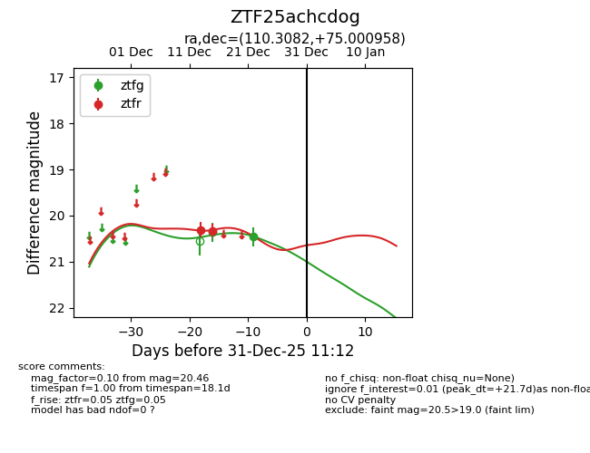
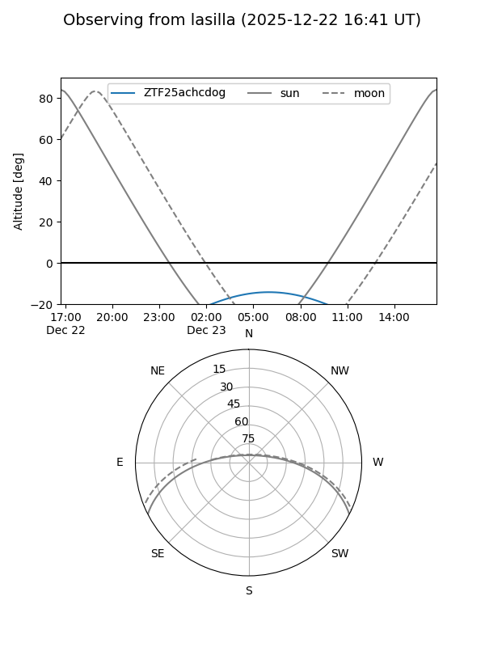
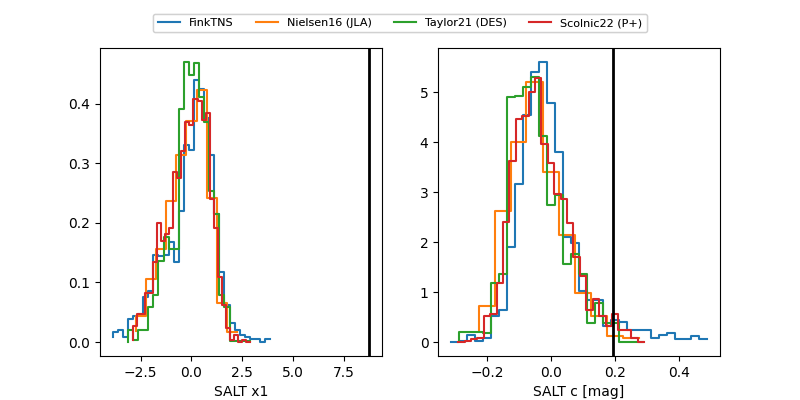

ZTF25achcdog
Target ZTF25achcdog at 2025-12-22 16:41
Aliases and brokers:
FINK: fink-portal.org/ZTF25achcdog
Lasair: lasair-ztf.lsst.ac.uk/objects/ZTF25achcdog
ALeRCE: alerce.online/object/ZTF25achcdog
alt names
ZTF25achcdog (ztf,fink_ztf)
Coordinates:
equatorial (ra, dec) = 110.3082,+75.00096
equatorial (HMS+DMS) = 07:21:13.96,+75:00:03.45
galactic (l, b) = (139.8369,+28.05431)
Flags:
Photometry:
last ztfg=20.46, ztfr=20.33
2 ztfg, 2 ztfr detections
Lightcurve

Visibility


Additional plots
